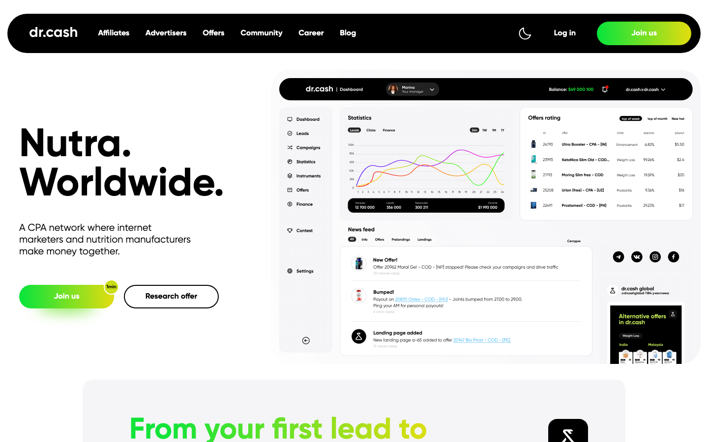
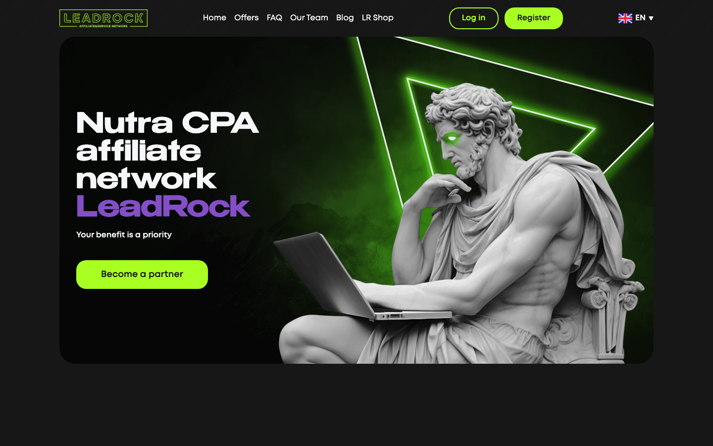
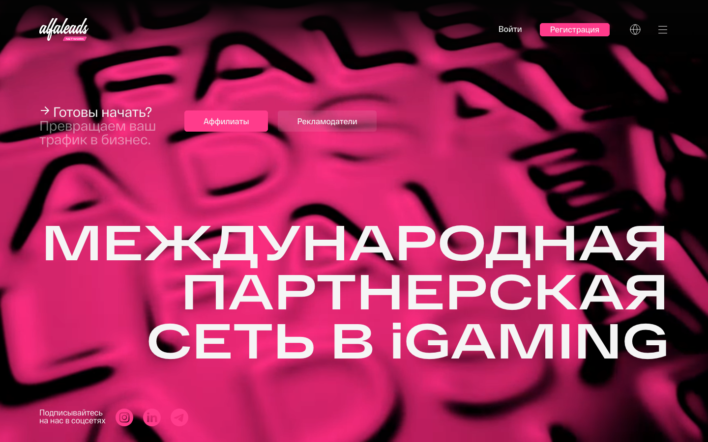
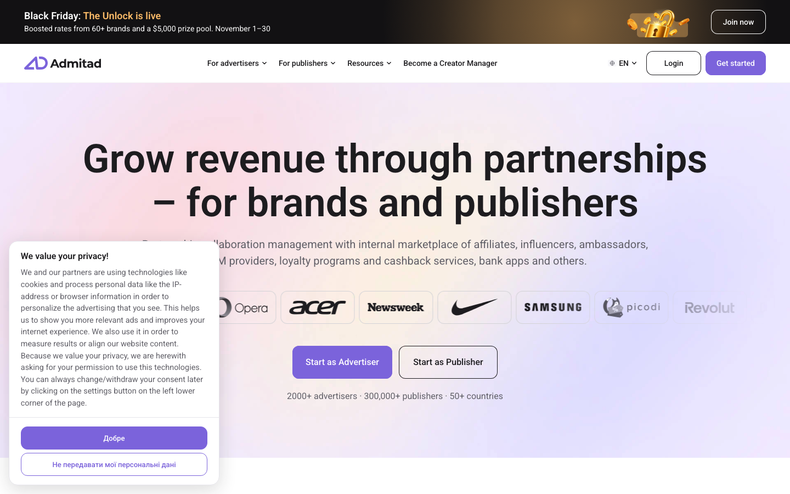
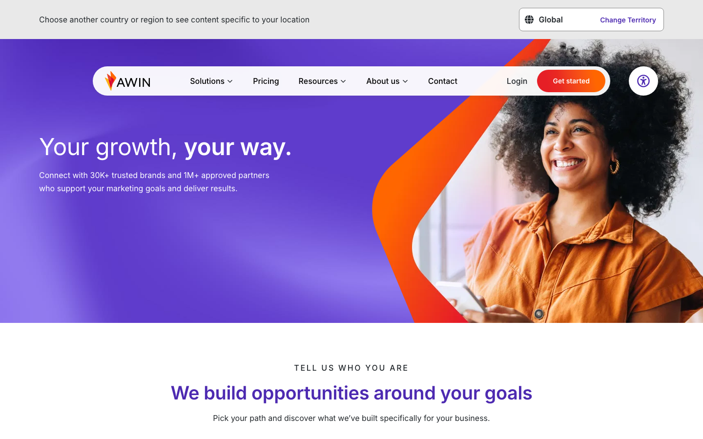
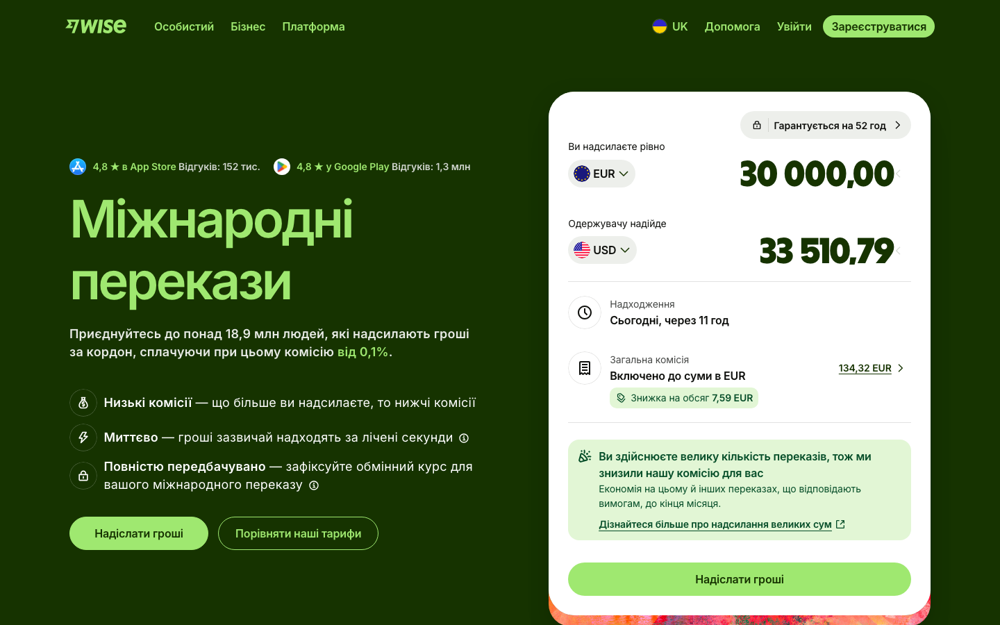
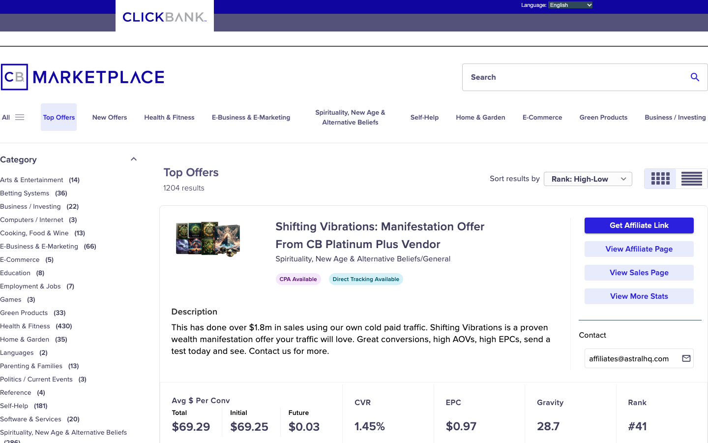
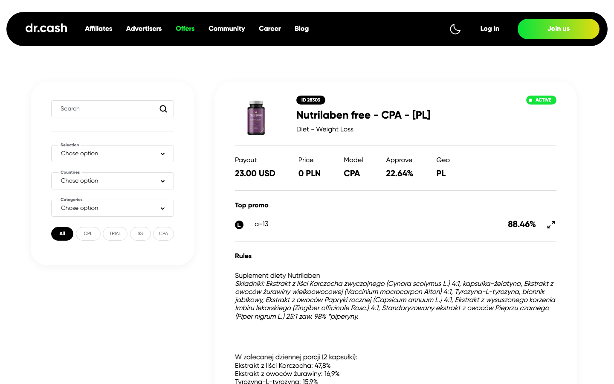
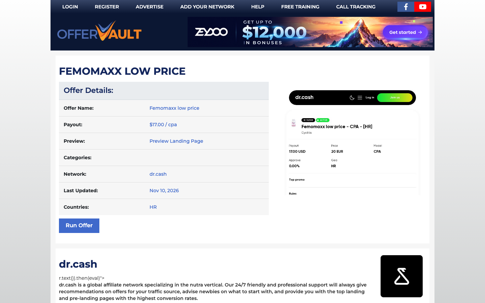

Підсумок кроків 03–06: як конкуренти ведуть арбітражника до розмови про співпрацю, хто найкраще доводить цінність оферу ще до контакту, і який UX-патерн беремо в MVP.
Усі дані й 30 скрінів на цій сторінці взято з публічних сторінок без логіну (Playwright, Chrome 1440×900, локаль uk-UA). Кабінети не відкривали, форми не надсилали. Цифри конкурентів наведено так, як вони їх заявляють.
Теки research/screens/own/ немає. Скрінів з вашого особистого кабінету в ресерчі немає, тож особистих даних на сторінці теж немає (перевірено перед публікацією).
Усі зміни позначено оновлено; початковий аналіз не стираємо. Відповіді й відкриті питання ↓
П'ять компаній з трьох груп: Dr.Cash і LeadRock (хард), Alfaleads і Admitad (софт), Awin (аспіраційний). Вибір і причини — 04-matrix
| Вісь | Dr.Cash | LeadRock | Alfaleads | Admitad | Awin |
|---|---|---|---|---|---|
| Перший екран |  |
 |
 |
 |
 |
| «Nutra. Worldwide.», «Join us 1min» + «Research offer», мокап дашборду зі ставками | Темний неон, статуя, «Become a partner», цифр немає | Брутальна типографіка, кнопки-ролі «Аффилиаты / Рекламодатели» | «Start as Advertiser / Publisher», логотипи брендів, «2000+ · 300,000+ · 50+» | «Your growth, your way.», «30K+ brands, 1M+ partners», CTA лише в шапці | |
| «Написати компанії про співпрацю» | Головна кнопка веде на реєстрацію; Telegram для вебів і рекламодавців — нижче першого екрана скрін | 4 менеджери з Telegram-хендлами + форма «We're in touch»; кнопка в хіро веде на логін скрін · скрін | Окремі форми для двох ролей; Telegram лише у футері скрін · скрін | Рекламодавець → форма «Talk to Admitad Expert», паблішер → реєстрація скрін · скрін | «Choose your path» + контактна форма, месенджерів немає скрін · скрін |
| «Топові офери з високим ROI і максимальним конвертом»: чи видно одразу | Так — публічний каталог з Approve % і Payout скрін | Частково — «Payout up to $X» без GEO і апруву скрін | Ні — доступ обмежений | Ні — доступ обмежений | Ні — лише бренди й кейси |
| Як задача завершується | Кабінет (доступ обмежений) або чат з менеджером; у відгуках скарги, що менеджер не відповідає скрін · Trustpilot | Кабінет, Telegram або форма «Send»; що після надсилання — не перевіряли скрін | Кабінет; є Team check для перевірки менеджера скрін | Відповідь експерта (не перевіряли) або кабінет | Відповідь команди (не перевіряли) або кабінет |
| Мова (локаль uk-UA) | Лише EN | EN, сайт сам перевів на /en/; UA немає |
Автоматичний редирект на RU | EN + банер cookie українською | EN, вибір регіону |
Мовна вісь: редиректи й атрибут lang, записані в 04-matrix. Повна матриця з усіма джерелами — там само.
Три спільні патерни ринку
У 4 з 5 головна кнопка першого екрана веде на реєстрацію або логін, а живий контакт лежить нижче чи у футері.
«Хто ви» → свій шлях, своя форма чи контакт. Так у 4 з 5, виняток — LeadRock.
Великі цифри мережі є скрізь, кейсів з ROI на головних сторінках майже немає.
Три відмінності
Від публічного каталогу (Dr.Cash), через «виплату до $X» (LeadRock), до повністю закритих (Alfaleads, Admitad, Awin).
Кабінет, чат з людиною в Telegram або форма з відповіддю експерта. Довіру до Telegram-контакту підсилює лише Alfaleads (Team check).
Додатково з кроку 03: жоден хард-конкурент не називає на лендінгу наші GEO (PL / RO / HU / CZ / SK) поіменно; вони є лише у фільтрі каталогу Dr.Cash. 03-competitors · скрін
Вісь 3 матриці, де ринок найслабший. 05-benchmark
Людина не бачить, які офери, з якою ставкою, апрувом і на які GEO вона отримає, поки не зареєструється або не напише менеджеру. Тому обіцянку «топові офери з високим ROI» неможливо перевірити.
Оцінка за 8 критеріями, 1–5
| Критерій | Wise | ClickBank | Dr.Cash | OfferVault | PartnerStack | LeadRock* |
|---|---|---|---|---|---|---|
| К1 Відкритість без логіну | 5 | 5 | 5 | 5 | 5 | 2 |
| К2 Метрики на картці | 5 | 5 | 5 | 3 | 3 | 2 |
| К3 Доказовість чисел | 5 | 5 | 2 | 2 | 2 | 1 |
| К4 Свіжість | 5 | 4 | 3 | 4 | 2 | 1 |
| К5 Порівнюваність | 5 | 5 | 4 | 4 | 3 | 2 |
| К6 Чесність обмежень | 4 | 3 | 5 | 1 | 4 | 1 |
| К7 Під мій випадок | 5 | 3 | 3 | 3 | 2 | 1 |
| К8 Міст до дії | 5 | 5 | 2 | 4 | 5 | 2 |
| Сума з 40 | 39 | 35 | 29 | 26 | 26 | 12 |
* LeadRock — для контрасту, типовий хард-конкурент. Шкала й обґрунтування кожної оцінки — 05-benchmark.




Топ-3 механізми для MVP
Ставка, апрув, GEO, модель, статус і «Оновлено: дата»; у кожної метрики підказка «що це і за який період». Закриває К1–К4.
Еталони: ClickBank, Dr.Cash, OfferVault
оновлено модель — CPA, апрув по GEO показуємо; публічні ставки — питання 19. дані не підтверджені самих оферів ще немає
Заборонено push і мотивований трафік, селеби — з апрувом менеджера, виплати гнучкі під запит. Ринок показує лише плюси, тож названі умови самі стають доказом (К6). «Гарант на тестовий пролив»
Еталони: Dr.Cash, PartnerStack
оновлено гарант на лендінг не йде — лише для чинних партнерів, індивідуально
«Взяти в Telegram» відкриває чат з уже вписаним ID оферу і GEO. Головна дія стає продовженням вибору (К8).
Еталони: ClickBank, PartnerStack, Wise
дані не підтверджені чи працює вписаний текст для особистого акаунта Telegram у всіх клієнтах
Ставки конкурентів закриті логіном, щодня змінюються за GEO і капами, а топ-вебам дають приватні бампи. Таблиця швидко застаріє, її неможливо довести, і вона ризикує репутацією. Замість неї — фільтри й сортування всередині власної вітрини.
Ключова задача: арбітражник, вебмайстер чи рекламодавець має з лендінгу почати розмову з Monolead — у Telegram або через заявку, яка теж іде в Telegram. CLAUDE.md §3 · 06-patterns
Кнопка відкриває чат t.me з конкретним менеджером. Як у LeadRock і Dr.Cash.
Форма йде в чергу, команда відповідає пізніше. Як в Admitad і Awin. У нас — запасний вихід поза робочим часом.
Квіз на сайті чи Telegram-бот: роль → GEO → джерело → менеджер. Як «Tell us who you are» в Awin.
Вибрав офер у вітрині → «Взяти офер» з контекстом. Як ClickBank, PartnerStack, OfferVault.
Реєстрація → кабінет → менеджер потім. Патерн більшості ринку.
Так зафіксовано в брифі. Telegram — основний CTA; уся комунікація компанії вже там (@Monolead_account, @monolead_cpa), форма теж іде в Telegram.
Не потребує того, чого немає. Кабінету немає, стек — статичний HTML без бекенду, а посилання t.me працює без інфраструктури.
Це наша відмінність. «Підтримка 24/7», індивідуальні умови, гнучкі виплати й досвід «ми самі вийшли з баїнгу» підтверджує людина. Ринок ховає її за реєстрацією. оновлено
CLAUDE.md §1 · патерн ринку 01
Другий, за умови: вітрина оферів — якщо будуть реальні публічні дані; кожна картка закінчується кнопкою Telegram. Не підходить: самообслуговування — кабінету немає, і ми втратили б відмінність. 06-patterns
Гіпотези ще не перевірені. Показники для перевірки названо, але дані з'являться лише після запуску лендінгу.
| # | Прогалина | Гіпотеза | Звідки випливає |
|---|---|---|---|
| H1 | Офери і ставки не видно до контакту; ринок показує їх лише в Dr.Cash | Вітрина топ-оферів зі ставкою, апрувом, GEO і датою оновлення приведе більше людей до кнопки Telegram, а звернення будуть предметнішими (одразу з ID оферу). оновлено апрув по GEO — так; ставки публічно — питання 19 | Конкуренти · вісь 3Бенчмарк · мех. 1, 3 |
| H2 | Повноцінної української немає ні в кого; Alfaleads віддає UA-відвідувачу RU | Повноцінна UA-версія з hreflang: UA-арбітражники частіше дочитуватимуть і писатимуть, ніж на англомовних сайтах конкурентів. | Конкуренти · вісь 5 |
| H3 | Людина схована за реєстрацією | Якщо головна кнопка першого екрана відкриває Telegram менеджера, а не реєстрацію, розмову почне більше відвідувачів. | Конкуренти · патерн 1Патерни |
| H4 | Після заявки невідомо, хто і коли відповість; у Dr.Cash скаржаться на мовчання менеджера | Конкретна обіцянка біля кнопки («відповімо за N хв, з 9 до 21») і запасна форма поза робочим часом підвищать кліки й зменшать кинуті розмови. дані не підтверджені час відповіді Monolead | Конкуренти · вісь 4Патерни |
| H5 | Довіри до «менеджера в Telegram» немає; підробні акаунти — відомий ризик | Блок менеджерів з фото й хендлами плюс перевірка «чи це справді наш менеджер» — і відвідувачі частіше напишуть першими. підтверджено | Конкуренти · відмінність 2Патерни |
| H6 | Ринок показує лише плюси; умови сховані або відсутні | Умови прямо на сторінці (заборонено push і мотивований трафік, селеби — з апрувом, гнучкі виплати) дадуть більше довіри, ніж голі обіцянки. оновлено | Бенчмарк · мех. 2 |
| H7 | Наші GEO поіменно на лендінгах не названі | Окремі GEO-блоки чи сторінки дадуть пошуковий трафік за запитами «офери [країна] nutra», де конкурентів немає. дані не підтверджені обсяги запитів, семантичного ядра ще немає | Конкуренти · крок 03 |
| H8 | Цифри масштабу без доказу результату | 2–3 реальні кейси з ROI переконають краще, ніж «N оферів». | скасовано кейсів не буде |
| H8′ | Цифри масштабу без доказу результату | Середній апрув топ-оферів по GEO / джерелах і відгуки партнерів переконають краще, ніж «N оферів». нова дані не підтверджені апрув і відгуки надасть / запросить власник | Конкуренти · патерн 3Відповіді 3, 6, 7 |
Усе знято без логіну. Клік відкриває скрін у повному розмірі.
Оновлено 2026-11-11: на 13 питань відповіді отримано й перенесено в бриф. Нижче — те, що ще відкрите, і короткий підсумок відповідей. «Ресерч:» — лише орієнтир з ринку.
?start= передає контекст і рахується в аналітиці.